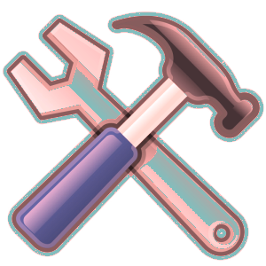

Spring
-
이제는 Spring Boot를 써야할 때다
스프링 프레임웍(Spring Framework)의 현행 버전은 4.1.x다. 그런데 세월이 흐르고 모든 것이 변해가는데 2014년 4/4분기인 현재 시점에서 아직도 2.5 버전대의 습관에서 못 벗어난 경우를 가끔 본다. 과감히 바꿔야할 때가 됐다. 이제는 Spring Boot를 써야할 때다. 스프링 부트는 스프링 프레임웍을 사용하는 프로젝트를 아주 간편하게 셋업할 수 있는 스프링 프레임웍의 서브프로젝트다.
-
알아두면 편리한 자바 유틸리티 클래스들
프로젝트를 하다보면 비슷한 기능들이 자주 사용되는 경우가 있고 개발자들은 흔히 이런 기능들을 스태틱(static) 메서드로 만들어 유틸리티 클래스를 만들곤 한다. 그런데 이런 유틸리티 기능들이 사실 우리가 이미 사용하는 오픈소스 프레임웍이나 라이브러리에 포함된 경우가 상당히 많다. 또한 개발자가 나름 만든 클래스에는 버그가 숨어 있는 경우도 많아서 가급적 검증된 라이브러리를 사용하는 게 훨씬 낫다. 이번 글에서는 알아두면 편리한 자바 유틸리티 클래스들 에 대해 찾아보았다.

-
새로 발표된 스프링 4.0에 대해 알아보자
[덧글] 1월 23일에도 웨비나가 있었고 이번엔 앞부분을 약간 놓치고 다 봤다. 관심 있는 사람은 유튜브에서 보기 바란다. 구랍 12월에 스프링 프레임웍 4.0 GA가 발표됐었고 엊그제 Spring IO에서 웨비나를 한다길래 꼭 보려고 했는데 그만 놓치고 말았다. 요즘 야근으로 정신이 없다. T_T 그래서 남이 알려주기 전에 직접 알아보기로 했다. 출처는 스프링 블로그와 지침서 등이다. 과연 스프링 4.0에서는 뭐가 새로워졌는가?
-
자바에서 메일 보내는 방법
최근에 우리 회사 새내기 개발자가 e메일 보내기에 대해 약간이나마 어려움을 느낀 것 같길래 자바에서 e메일 보내는 방법을 다시 한번 정리해볼 필요가 있겠다는 생각이 들었다. 이 글에서는 JavaMail API, 스프링 API, 기타 방법으로 e메일을 발신하는 방법을 알아보기로 한다. 자바 메일 보내기
-
스프링의 웹 요청 처리 흐름
스프링은 주로 웹 개발에 사용되는데 스프링의 웹 MVC 참조 설명서나 기타 여러 학습 자료를 보면 다음과 같은 유명한 흐름도를 보게 된다.